Sistremul de racire desktop
Componentele electronice generează căldură la trecerea curentului prin acestea.
Componentele unui calculator funcţionează mai bine într-un mediu cu temperaturi mai mici numit şi mediu răcoros. Dacă căldura nu este evacuată există posibilitatea ca sistemul să funcţioneze mai lent, iar dacă aceasta se acumulează putem ajunge în cazul în care componentele sistemului să se deterioreze
În principal avem unităţi de răcire pentru:
- carcase
- surse de alimentare,
- procesoare
- plăci video
- Placi de baza
- Memoria ram
Creşterea circulaţiei aerului în interiorul carcasei unui calculator permite o evacuare mai eficientă a căldurii. Un ventilator de carcasă este instalat în carcasa calculatorului pentru a face procesul de răcire mai eficient. Ventilatoarele de carcasă sunt folosite pentru a mişca aerul în interiorul carcasei. Aerul care trece pe lângă componentele calde absoarbe căldura şi apoi este evacuat din carcasă. Prin acest proces este împiedicată supraîncălzirea componentelor calculatorului.
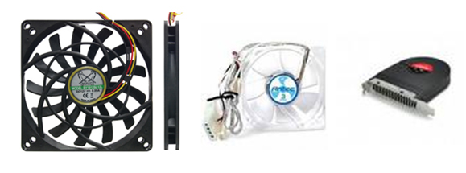
În cazul în care un calculator are nevoie de răcire activă suplimentară se pot monta ventilatoare pe carcasa calculatorului.
Unităţi de răcire pentru carcase
Cele mai pupulare unitati de racier pentru carcase sunt ventilatoarele, acestea suplimenteaza fluxul de aer care trece prin caracasa si care raceste indirect componentele .
Pentru ca fluxul de aer sa fie optim trebuie sa alegem ventilatroul potrivit pentru tipul de carcasa si locul in care il plasam , astfel se deosebesc doua tipuri de ventilatoare:
Ventilaorare de tip high airflow (haf) , acestea sunt concepute pentru a creea un flux de aer cat mai mare. Aceste ventilatoare sunt poiectate pentru a fi folosite in locatii care nu sunt restrictionate precum spatele carcasei sau partea de sus a acesteia
Ventilaroare de tip static pressure (sp) , acestea sunt concepute pentru a creea un flux de aer car mai puternic.Aceste ventilatoare sunt proiectate pentru a fi folosite in locatii in care fluxul de aer este restrictionat precum radiatoare , partea frontal si laterala a caracasei si surse de alimentare
Atunci cand proiectam sistemul de racirea a carcasei cu ajutorul ventilaroarelor trebuie sa avem in vedere ce caracteristice au aceste ventilatoare cele mai importante caracteristici sunt:
- fluxul de aer produs care se masoara deobiecei in metrii cubi pe minut (cfm)
-viteza de rotatie care se masoara in rotatii pe minut (rpm)
-nivelul de zgomot produs care se masoara la viteza de rotatie minima si maxima in decibeli (db)
-marimea ventilatorului cele mai pupulare pentru carcase sunt 80mm 120 mm 140 mm si 200mm si se masoara in mm
Cel mai apreciat producator de ventilatoare este firma noctua, o firma austreliana care se ocupa numai cu ventilatoare toate produsele acestei firme avand o garantie de 6 ani , avem in pozele de mai jos doua dintre cele mai pupulare modele (haf in dreapta si sp in stanga)
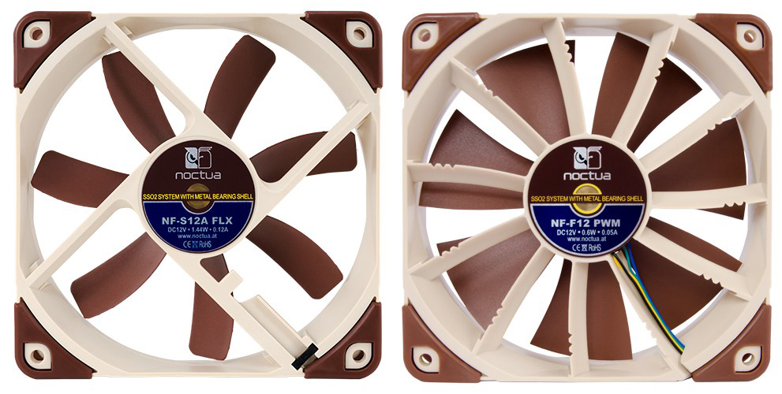
Un alt lucru pe care trebuie sa il avem in vedere cand poriectam sietemul de racire a unei carcase este presiunea pe care o creeaza ventilatorarele in interiorul carcasei astfel se definesc doua tipuri de presiune :
-presiune negative, mai mult aer cald iese prin ventilatoare de evacuare decât aerul rece care intră în carcasa, prin intermediul ventilatoarelor de admisie.CFM-ul ventilatoarelelor de evacuare depășește CFM-ul ventilatoarelelor de admisie.
-presiune pozitiva, mai mult aer rece intra în prin ventilatoare de admisie decât aer cald care iese din carcasa, prin intermediul ventilatoarelor de evacuare.CFM-ul ventilatoarelelor de evacuare este mai mic decat CFM-ul ventilatoarelelor de admisie.
Diferentele dintre cele doua tipuri de presiuni este destul de greu de observant in viatea de zi cu zi si nu au un efect mare asupra racirii , lucrul cel mai important este ca raportul dintre aerul care intra si care iese din carcasa sa fie pe cat posibil un pic catre partea negativa deoarece aerul cald are tendinta de a-si mari volumul si de a urca de aceeal locul ideal pentru ventilatoare de evacuare este partea de sus a carcasei.
Deasemenea un raport balansat intre aerul care intra si cel care iese din carcasa ajuta foarte mutl si la prevenirea intrarii prafului in carcasa chiar daca carcasa nu este prevazuta cu filter de praf.
Fan control
Controlul ventilatorelor este de gestionarea vitezei de rotație acestuia. În calculatoarele, diferite tipuri de ventilatore sunt utilizate pentru a asigura o răcirea adecvată, precum și diferite mecanisme de control a acestora care echilibreaza capacitățile de răcire și zgomot ale ventilatoarelor.
Controlul vitezei de rotatie a ventilatoarelor se poate realiza prin mai multe modalitati precum:
Thermostatic:in acest stil de control al ventilatorului, ventilatorul este fie pornit sau oprit. Temperatura din interiorul carcasei este verificata, iar în cazul în care este detectată o temperatură peste o anumita valoare prestabilita , ventilatoarele sunt setate la viteza maximă. Când temperatura scade din nou sub un valoarea prestabilita, ventilatoarele sunt setate la viteza minimă. Această metodă de control reduce cerințele de putere si zgomotul produs în timpul perioadelor de utilizare redusa, dar atunci când sistemul funcționează la capacitate, zgomotul ventilatorului poate deveni o problemă din nou.
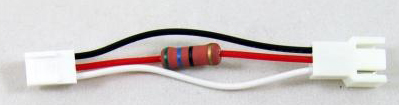
Reglarea voltajului: Un ventilator de răcire standard este, în esență, un motor de curent continuu cu niste pale atasate de rotor. Prin varierea tensiunii de intrare pe un domeniu acceptabil pentru ventilator, viteza ventilatorului va crește (la tensiune adăugată) și scădere (la tensiune redusă); un ventilator mai rapid înseamnă mai mult aer mutat și, prin urmare, o rată mai mare de schimb de căldură. Există câteva modalități de a efectua această reglementare cea mai pupulara fiind cea cu rezistori ,in special la adaptorii de zgomot scazut.
Pulse-width modulation
Conectorii cu PWM control au 4pini, iar distributia lor e destul de intuitiva :
pin1 - GND
pin2 - +12V
pin3 - monitorizare
pin4 - PWM control
Primii 3 pini au aceleasi functii, iar al 4-lea e folosit DOAR la ventilatoarele ce suporta PWM control. Cum functioneaza: pinul de +12V tine permanent tensiunea la maxim, iar cel de-al 4-lea pin trimite regulat impulsuri cu o frecventa in jurul a 25Hz si cu o durata mai mica sau mai mare, in functie de turatia dorita. Circuitul de control inclus in ventilator vede impulsurile si controleaza (foarte precis) turatia ventilatorului in functie de durata impulsurilor: impulsuri mai lungi = turatie mai mare, impulsuri scurte = turatie mica. Pentru turatie maxima impulsurile sunt atat de lungi incat dispar pauzele dintre ele (duty cycle 100%).
Pwm este cea mai folosita si cea mai versatila metoda de a controla ventilatoarele , fiind sportata de majoritatea placilore de baza noi si nu este folosita numai pentru ventilatoarele de carcasa.
Pentru a controla viteza ventilatoarelor de pe carcasa avem doua optiuni, fie conectam ventilatoarele direct la placa de baza cea mai buna optiune pentru un numar mic de ventilatoare sau conectam ventilatoarele la un fan controller.
Fan controllerul este o componenta hardware care permite controlul mai multor venitilatoare simultan si independent automat in funtie de senzorul de temperature ambianta sau manual. Aceasta componeta hardware este o alegere buna pentru cei care au nevoie de peste 2 ventilaroare pe carcasa sau radiatoare.Fan controlerele se monteaza deobicei in bayu de 5.2 inch.
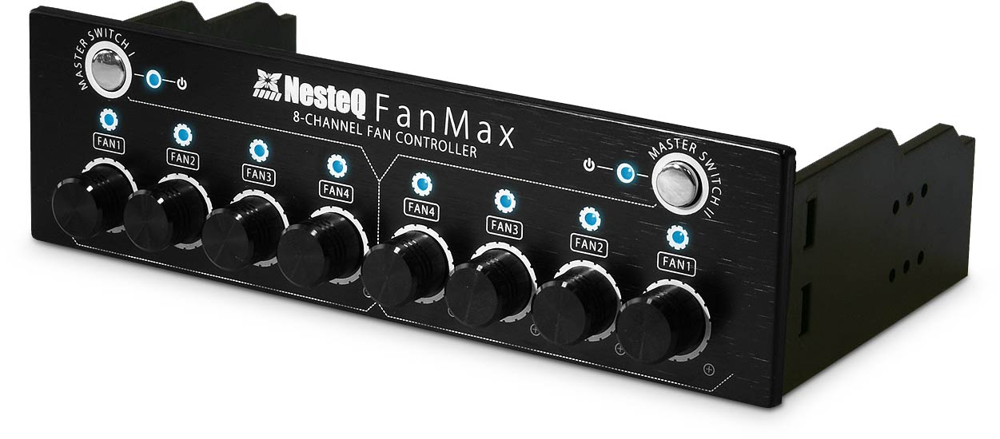
Unităţi de răcire pentru surse de alimentare
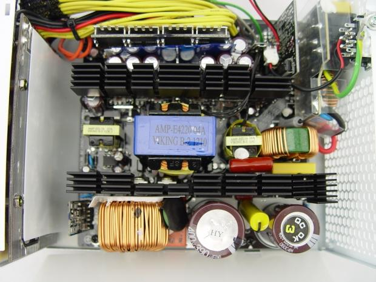
Sursele de alimentare necesita racire in special cand calculatorul este utilizat aprope de maxim deoarece acesta necesita mai mult current de sursa lucru care duce la emanarea unei cantitati mai mari de caldura de catre sursa
Sursele de alimetare sunt racite de un ventilator , componentele care emana mai multa caldura au si radiatorare care faciliteaza disiparea de caldura de pe acestea.Sursele moderne au o tehnologie numita zero fan mode , care opreste ventilatorul sursei cand componentele sistemului nu solicita mult current, si il porneste atunci cand necesarul de current creste.
Acesta tehnologie ajuta la prelungirea vetii ventilatorului precum si la reducerea nivelului de zgmot.
Unităţi de răcire pentru procesoare
Unitatea centrala de procesare a unui sistem de calcul este una dintre componentele care genereaza o cantitate de caldura mare , iar din caza suprafetei foarte mici a unu processor (cativa cm patrati) aceasta nu este capabil sa disipe caldura fara un sistem de racire adecvat.Cele mai folosite sisteme de racire pentru procesoare sunt: racirea pe aer,apa si in unele cazuri extreme pe cu azot lichid.
Racirea pe aer
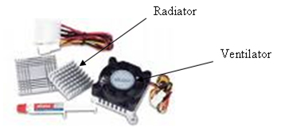
Se realizeza cu ajutorul unui radiator. Radiatorul de pe procesor numit şi cooler înlătură căldura de pe nucleul acestuia. El este compus dintr-un radiator pe care se află fixat un ventilator. Radiatorul este format dintr-un postament care se continuă cu o structură lamelară fabricat din aluminiu sau cupru. Postamentul vine în contact cu suprafaţa procesorului şi preia căldura degajată de acesta şi apoi o dispersează în mediul înconjurător. De obicei, ventilatorul este acoperit cu un grilaj care împiedică contactul dintre paletele lui şi cablurile care, traversează spaţiul interior al carcasei
Aceasta forma de racire este cea mai des intalnita in toate tipurile de sisteme deoarece functioneaza pe un principiu simplu.Aceste se diferentiaza atat prin marimea lor cat si prin tehnologia folosita pentru a disipa caldura astfel se remarca urmatoarele tehnologii: contact direct, heat pipes si vapor chamber.
Contact direct
Aceste coolere sunt cele mai comune si vin in pachet cu procesorul achizitionat.De cele mai multe ori radiatorul are o bucata de cupru care face contact direct cu procesorul si faciliteaza transportul de caldura catre lamele din aluminiu care sunt racite de ventilator.
Desi populare si usor de montat aceste coolere ofera cea mai proasta performanta si sunt zgomotoase, sunt foarte bune pentru cei care nu solicita procesorul la maxim tot timpul si nu isi expun sistemul la temperaturi ambientale ridicate.
Coolere cu contact direct impreuna cu unul sau doua ventilatoare pentru carcasa sunt perfecte pentru calculatoare folosite in birouri in aplicatii de tip office si pentru utilizatorii comuni pe care nu ii deranjeaza zgomotul creeat de acestea.

Heat Pipe
La coolere pe are regula este simpla, cu cat coolerul este mai mare cu atat va raci mai bine, in timp aceste coolere au fost perfectionate prin introducerea Heat Pipe-urilor, aceste sunt niste tevi din cupru umplute cu lichide care se pot evapora la temperaturi mai mici de 100% C, aceste heat pipe-uri ajuta la transportul caldurii de la baza (de pe suprafata procesorului) spre varf unde caldura este transfetata pe niste lamele de aluminiu si in final disipata in aer, si aici procesul este grabit prin folosirea ventilatoarelor. Coolerele mari cu multe Heat Pipe-uri pot fi folosite si fara ventilator, practic vom obtine un sistem de racire foarte eficient, rata de esec a acestui sistem este 0%, tocmai din aceasta cauza pe servere este ales sistemul de racire pe aer semi-pasiv (cu flux de aer indirect), asta inseamna ca avem un cooler pasiv care nu poate ceda, trebuie sa tinem cont ca serverele functioneaza 24/7.
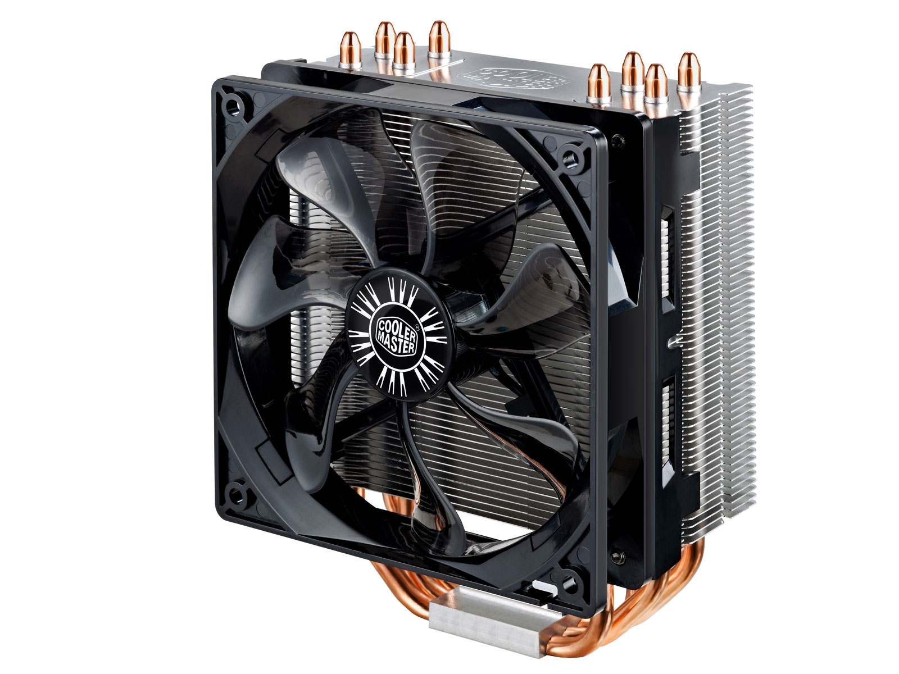
Cel mai popular cooler de acest fel este facut de cei de la CoolerMaster si este modelul hyper 212 evo, acesta este compatibil cu socketurile Intel® LGA 1366 / 1155 / 1150 si AMD FM2 / FM1 / AM3+. Are 4 heat pips care cu tehnologia contact direct continuu (cdc) si ventilatorul acestuia are suport pentru control pwm.Acest cooler vine intr-o forma de factor de tip tower cu o inaltime de 160mm si suport pentru 2 ventilatore de 120 de mm configurate in push – pull (un ventilaor trage aer rece in timp ce celalat il impinge pe cel cald afara).
Vapor chamber
Tehnologia Vapor Chamber se bazează pe acelaşi principiu ca şi tehnologia heatpipe. Un lichid de răcire este vaporizat pe o suprafaţă încinsă după care se condensează pe o suprafaţă rece şi ciclul se reia. Întregul proces de recirculare este controlat de un sistem pe bază de “fitile”. Tehnologia Vapor chamber aplatizează întregul sistem într-o cameră subţire – care este montată direct pe suprafaţa procesorului. De fapt lichidul de răcire este apa dar datorită presiunii joase la care are loc procesul, vaporizarea are loc la o temperatura mult mai mică decât punctul normal de fierbere. Dispunerea complexă a sistemului de “fitile” din interiorul modulului controlează fluxul de apă şi vapori astfel încât acesta poate funcţiona în orice poziţie este orientat.
Acesta tehnologia a fost implementata prima ora de producatorul de placi video sapphire, Sapphire HD3870 lansat în 2007 a fost primul produs grafic ce utiliza răcirea cu Vapor Chamber. Folosea un vapor chamber foarte subţire de 3mm pe un design de placă video uni-slot, acesta putea disipa 150W de căldură lucru ce a ajutat tehnologia sa devina foarte populara si mai tarziu a fost implentata si pe coolere pentru procesoare
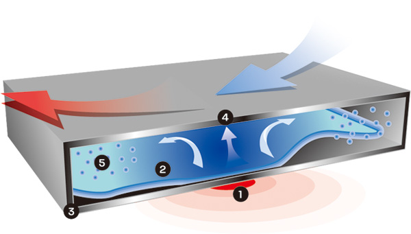
Racirea pe apa
Un sitem de racire pe apa se foloseste de capacitatea mai mare de a transporta caldura a apei, acesta preia caldura de pe procesor si o transfera mai departe la un radiator prevazut cu un ventilator pentru a acelera racirea apei.Aceste sisteme de racire sunt folosite de utilizatorii care solicita foarte mult procesorul sistemului de calcul si inspecial de cei care maresc fregventa de tact a procesorului peste specificatiile producatorului (overcloking) lucru care necesita cresterea voltajului aplicat pe procesor si care duce la cresterea semnificativa a temperaturii procesorului.
Un sitem de racire pe apa este alcatuit din:
1. Pompa de apa: este piesa cea mai importanta in acest sistem. Cu cat este mai puternica, cu atat este pompata mai multa apa in instalatie, ducand astfel la o racire cat mai buna a componentelor
2. Radiatorul. Poate fi din aluminiu sau din cupru. Cel din cupru este cel mai indicat.Acestea vin in diverse forme de factor single 120/140mm, double 120/140mm, triple 120/140mm si quad 120/140.
3.Rezervorul de apa , are rol in depozitarea lichidului de racire si este desemenea si locul prin care se copleteaza instalatia de racire cu apa.
4. Corpul de racire care se monteaza pe procesor. El este componenta ce absoarbe caldura produsa de procesor. Trebuie sa fie de cupru. Partea care vine in contact cu procesorul trebuie sa fie perfect plana. Si aici ca si la sistemele conventionale se foloseste pasta termica
Corpul poate fi construit din 3 parti, montat aratand ca un sandwich. Este compus din:
-Talpa ce trebuie sa fie din cupru, sa aibe o grosime de cel putin 5mm si trebuie sa fie perfect plana pe amandoua partile.
-Partea de mijloc ce poate fi construita din textolit sau pertinax sau orice material ce rezista la temperatura.
-Partea de sus, capacul ce poate fi din cupru, textolit sau pertinax. Fata care se imbina cu partea de mijloc care trebuie sa fie, de asemenea, perfect plana. Pe capac se insurubeaza (etans) racordurile (de 8-10mm) unde se va racorda furtunul.
5. Sistemul de prindere al corpului de racire pe soclu
6. Ventilatorul. La acest sistem de racire se folosesc ventilatoare mari de 120 mm. E stiut ca aceste ventilatoare sant silentioase si imping un volum mare de aer. Nu trebuie sa functioneze la turatie maxima, cu turatie redusa se obtin rezultate bune: racire suficienta si zgomot redus (exista ventilatoare montate pe chip-ul VGA ce produc mai mult zgomot decat un ventilator din instalatiile de racire cu apa)
7. Furtunul prin care circula apa. Dimensiunea: 8-10mm (depinde de racordurile componentelor descrise mai sus). Pentru a evita gatuirile-rasucirile(ce pot reduce-bloca circulatia apei) nu trebuie sa se indoaie usor. Pentru asta e bine ca peretele sa fie gros de 1,5mm. Este indicat sa fie din silicon. Acolo unde este nevoie de o cotire brusca se pot folosi racorduri ce au diferite unghiuri (90°,60°,45°).
Mjoritatea sistemelor de racire pe apa pentru porcesoare au toatea aceste componente gata asamblate aceste sisteme se numesc all in one liquid cooler (aio).Aceste coolere sunt cele mai populare si cele mai ieftine siteme de racire cu lichid .Popularitatea lor fiind datorata usurintei cu care aceatea se monteaza , aplicarea acestora pe pocesor este aprope identica ca cea a coolelor pe aer
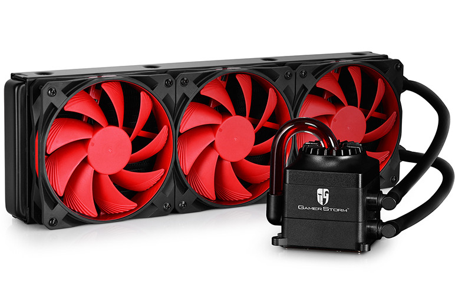
Un alt avantaj al sistemelor aio este faptul ca acestea sunt inchise etans si nu neceista completarea lichidului au o performanta ridicata si ocupa un spatiu mult mai mic avand pompa incorporata in corpul de racire si rezervorul incorporat in radiator.
Datorata capacitatii mari de transfer termic a apei racirea cu lichid este cea mai silentioasa altenativa in unele sisteme ventilatoarele pot fi oprite complet atunci cand calculatorul nu este utilizat la potential maxim, acest lucru duce la o operare complet silentiosa daca sistemul de calcul are o sursa cu o tehnologie de racire „fanless mode”.
Utilizatorii mai experimentati pot sa isi construiasca singuri sitemul de racire pe apa care poate fi legat la toate componentele calcultorului care nesita racire precum, procesorul grafic , regulatorul de voltaj de pe placa de baza, placutele de ram etc.Desi acest tip de sistem poate raci mai multe componente si poate fi mai eficient si silentios decat un aio cooler prezinta un numar destul de mare de dezavantaje precum: faptul ca nu se va potrivi in ala sistem de calcul , costul ridicat al tuturor componetelor necesare, timpul necesar construiri etc.s
Racire pe azot lichid
Azotul lichid este produs industrial în cantități mari prin distilarea din aerul lichefiat. Este un lichid de criogenic (foarte rece) care produce degerături instantaneu la contactul direct cu țesuturile vii.
Proprietatea lui de a menține temperaturile mult sub temperatura de îngheț a apei chiar când se evaporă ( -196 °C) îl face extrem de util într-o varietate de aplicații ca refrigerent.
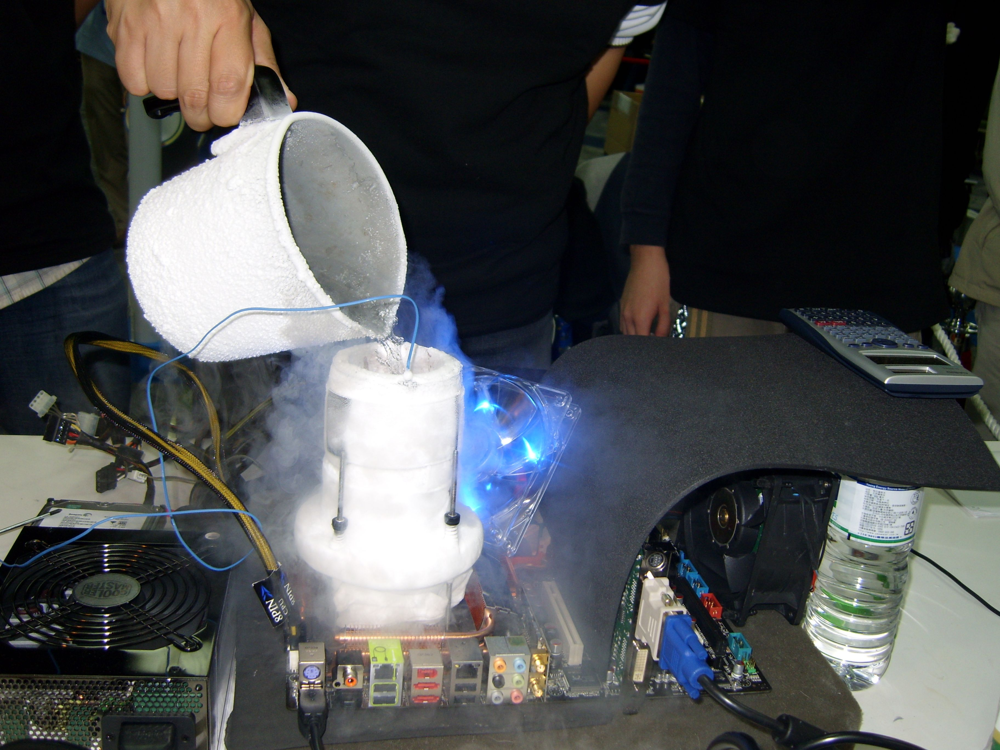
Acest sistem de racire este format dintr-un cilindru din cupru de dimensiunea procesorului care se aseaza pe acesta ,intre ele adaugandu-se un strat fin de pasta termoconductoare, in jurul ascestui cilindru se plaseaza materiale care blocheaza transferul termic catre alte componente si deasemenea materiale care absorb condensul care se creeaza cad azotul lichid este turnat in cilindrul de cupru.
Racirea pe azot lichid se foloseste numai la competitiile de overclocking si numa sub atenta supraveghere a specialistilor deoarece acest compus chimic este foarte periculos.
Atunci cand acest sistem de racire este implementat temperatura procesorului ajunge undeva in jur de -100 C cand este utilizat maxim , acesta fiind temperatura minima la care procesoarele pot rulara, datorita faptului ca temperatura azotului lichid este mult mai mica de -100 C dupa turnarea acestuia in cilindru overclokerii incalzesc cilindru cu o lampa de sudura pana la -100 C pentru a putea porni sistemul.Astfel s-a atins recordul mondial la overclock de 9 giga hertz pe un procesor intel i3 -4150 de la fregventa stock de 3.5 giga hertz , in timpul testuli de stabilitatea temperatura maxima a procesorului a atins 33 C
Unităţi de răcire pentru placile video
Placa video este una dinte componentele care degaja cea mai mare cantitate de caldura evident necesitand un sitem de racire eficient astfel se remarca mai multe tipuri de coolere: cu racire pe aer, cu racire pe apa , cu racire hibrida si cu racire pe azot lichid.
Racire pe aer
Majoritatea placilor video moderne au o forma de factor de 2 sloturi si un sistem de racire de tip blower sau open air.
Cele de tip blower (dreapta) trag aerul din carcasa si il imping prin radiator racind procesorul grafic, aerul cald fiind evacuat inafara carcasei, acest design are un singur ventilator care este plasat intr-un culuar care ghideaza aerul prin radiator lucru care restrange volumul maxim de aer pe care acest tip de cooler il poate misca dar din cauza ca evacueaza aerul cald inafara carcasei reduce temperatura din interiorul carcasei ajuntand pasiv la racirea celorlate component.
Cele de tip open air (stanga) trag aerul din carcasa si il imping prin radiator inapoi in carcasa , acest tip de design este mai comun si deobicei mai efficient deoarece mai multe ventilatoare si misca un volum de aer mai mare prin radiator lucru ce duce la o racire mai rapida.
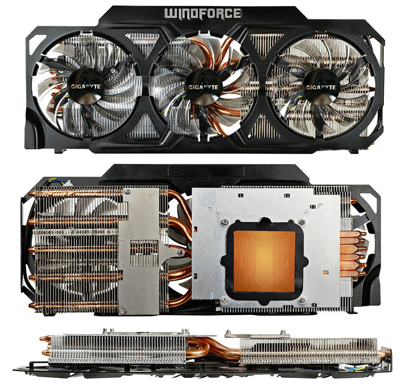
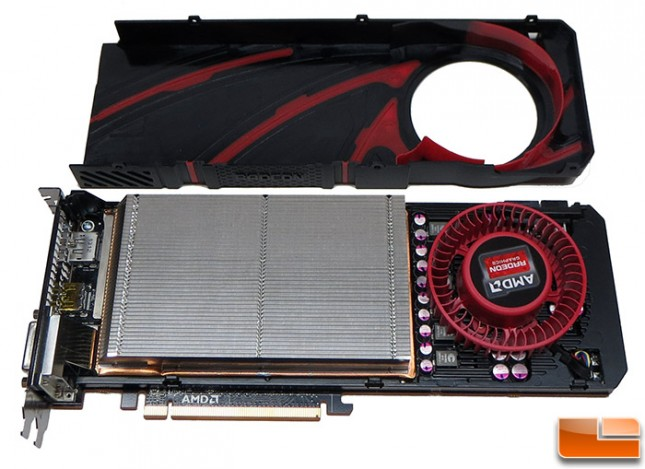
Racire pe apa
Sistemul de racire pe apa a unei placi video este alcatuita din aceleasi componente ca acelea a sistemului de racire pe apa de la procesoare singura componenta care difera este corpul de racire acesta difera de la model la model iar unele placi video au si un corp de racire hibrid ce permite folosirea placilor video fara a fi racite pe apa cand aceata optiune nu este disponibila, cel mai cunoscut producator de astfel de placi video este asus cu seria posseidon.(corp racire stanga ,corp racire hibrid dreapta)
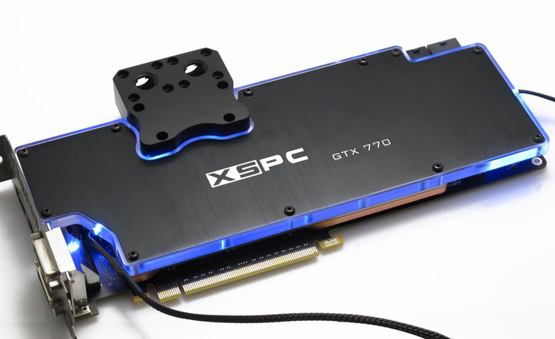
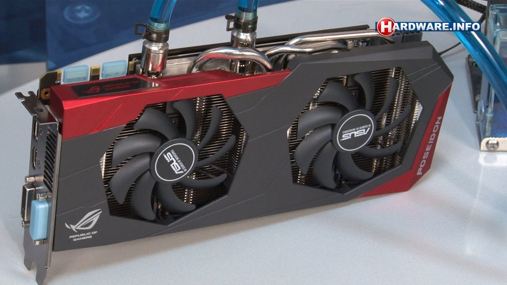
Versatilitatea racirii pe apa este utila atunci cand utililzatorii creeaza sisteme cu mai multe placi video (sli/cross fire), racirea conventionala pe aer are de suferit deoarece ventilatorul primei place este astupat de cealata placa video lucru care poate duce la supraincalzirea primei placi iar caldura in exces creeata de prima placa se transfera si la celalata placa cauzand ambel place sa se supraincalzeasca.In cazul racirii pe apa pozitia placirlor este irelevanta deoarece caldura este transportata inafara carcasei prin intermediul apei.

Racire pe azot lichid
Are acelasi principiu de aplicare ca si in cazul porcesoarelor numai ca este mai rar intalnita deoarce procesoarele grafice nu isi pot mari fregventa de tact la fel de mult ca procesorul unu sistem de calcul.In poza de mai jos se observa un sistem cu 2 placi video cu 4 procesoare garafice configurat pentru racire pe azot lichid pentru toate componentele care suporta acest sistem de racire.
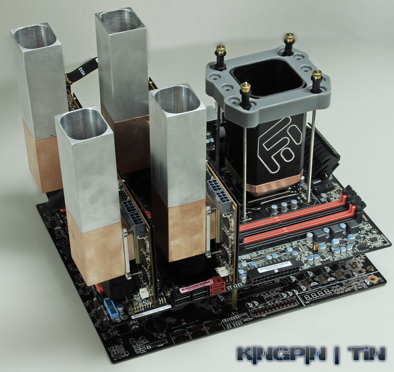
Unităţi de răcire pentru placile de baza
Componenta care degaja ce mai mare cantitate de caldura pe langa de pe placa de baza chipset este regulatorul de voltaj petru procesor (vrm) marjoritatea placilor ieftine nici macar nu au racire pasiva pentru aceste componente electonice lucru de conduce la limitarea voltajului si curentului maxim care poate fi transmis procesorului , lucru care nu afecteaza performanta in cazul utilizarii pocesorului in limitele recomandate de procesor dar care poate afecta sau la unele mode de placi chiar impedica overclokingul.
De aceea placile dedicate au vrm-ul prevazut cu un sistem de racire astfel se remarca trei tipuri de racire: racire pasiva , racire active, racire hybrid.
Racirea pasiva
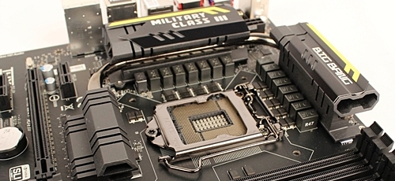Se realizeaza prin plasarea unui radiator peste vrm, acesta este cea mai pupulare metoda de racire deoarece este cea mai usor de implementat si este si cea mai ieftina .
Racirea activa

Se realizeaza prin plasarea unui cooler (radiator+ventilator ) peste vrm, acesta este o metoda mai rar intalnita ea reprezinta sistmul de racire de trecere intre racirea pasiva si cea hibrida.
Racire hybrid
Se realizeaza prin plasarea unui bloc hybrid peste vrm care are si racorduri pentru instalatia de racire pe apa ,acest tip de racire este intalnit numai pe palcile dedicate overclokerilor ne avand un avantaj real pentru utilizatorii comuni.Racirea hybrid este cea mai versatile solutie pentru racirea vrm-uli , placa de baza putand fi folosita si fara a fi racordata la sistemul de racire pe apa.
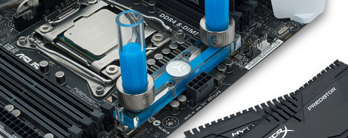
Unităţi de răcire pentru memoria ram
Desi memoriile ram deobicei genereaza o cantitate de caldura modesta in cazul in care fregventa lor de tact este marita peste specificatiile producatorului (overclock) caldura produsa de acestea crestre exponential iar pentru a facilita rularea la fregvente cat mai mare constant producatorii si utilizatorii implementeaza diverse sisteme de racire astfel se disting trei modalitati de racire una pasiva una activa si una hibrid.
Racire pasiva
Se realizeaza prin folosirea unui radiator care este plasat direct peste chipurile de memorie,acest tip de racire este cel mai des intalnit.
Racirea activa
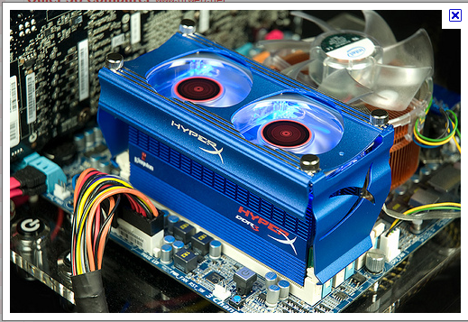Se realizeza prin plasarea unui ventilator peste memoriile ram deja echipate cu radiatoare, astfel ansamblul formeaza un cooler care raceste simultan mai multe memorii.
Racire hibrid
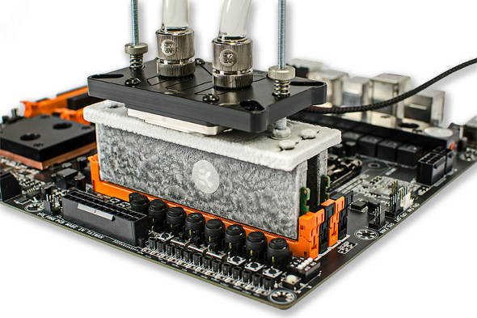
Se realizeza prin plasarea unui corp de racire peste memoriile ram deja echipate cu radiatoare, intre acestea se utilizeaza pasta termica ,astfel ansamblul formeaza un cooler pe apa care raceste simultan mai multe memorii.
Racirea unui sistem cu ulei mineral
Cea mai neconventionala metoda posibila pentru racirea totala a unui sistem de calcul, scufundarea acestuia intr-un acvariu cu ulei mineral.La prima vederea aceasta metoda pare intimidanta dar este o metoda foarte eficienta de racire.
Cum functioneaza: se instaleaza pe procesor si procesorul grafic radiatoare de mari dimensiuni cu sau fara ventiloare si se scufunda tot sistemul in ulei mineral , acest ulei mineral este un lichid nonconductiv si astfel sistemul de calcul poate functiona fara problem, tot uleiul mineral este dupa aceea circulat printr-un radiator de mari dimensiuni situat in exteriorul acvariului , practic acvariul devine o racire pe lichid pentru toate componentele indirect.
Acest tip de sistem nu poate fi construit decat de cei care au experienta foarte mare in asamblarea de cacluatoare si in utilizarea acestora deoarece odata scufundate componentele acestea nu pot pot fi folosite inafara sistemului deoarece uleiul mineral trebuie scurs iar durata de scurge a acestui ulei din toate componetele poate dura luni de zile.
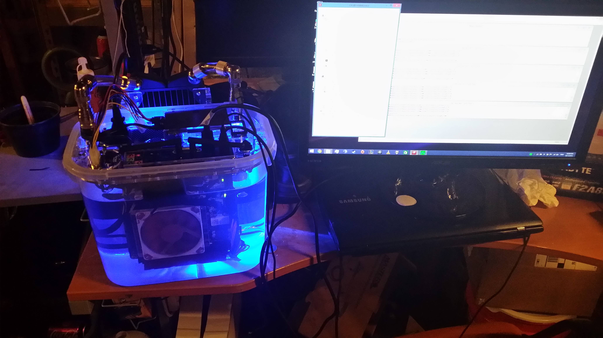

Inainte cei care vroiau sa creze un astfel de sistem trebuiau sa il construiasca ei insusi din acvarii sau diverse cotainere dar recent din ce in ce mai multi entuziasti inclina inspre construirea acestor tipuri de siteme iar producatorii de componete au observat acest trend si acum ofera diverse kituri realizate special pentru creea sistemelor de calcul cu racire prin scufundare in ulei mineral. Astfel de kituri ii ajuta si pe cei mai putin experimentati in domeniul calculatoarelor sa construiasca un sistem de acest fel.
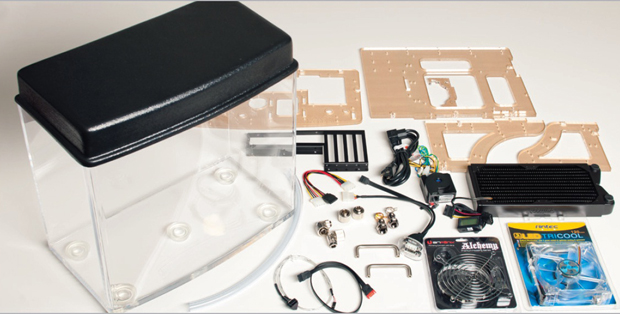